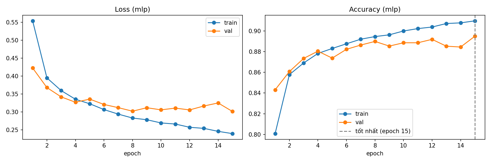
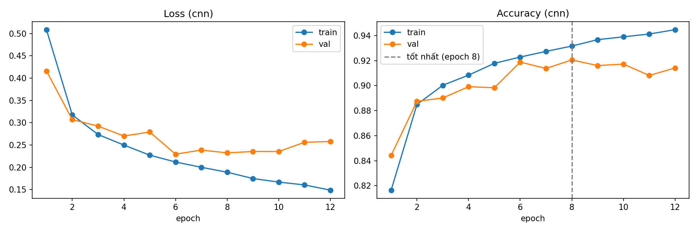
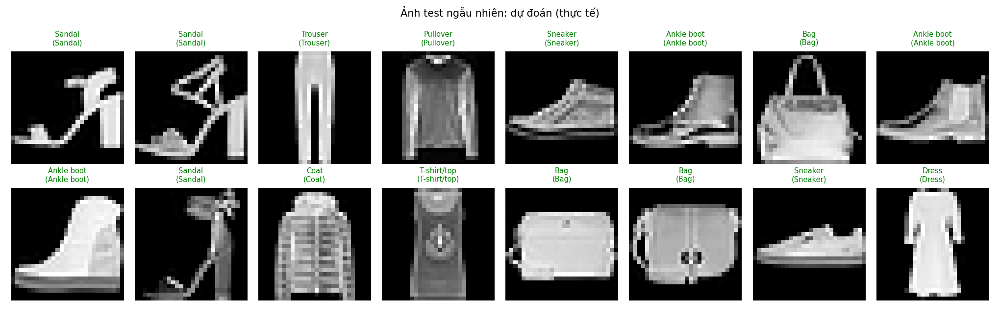
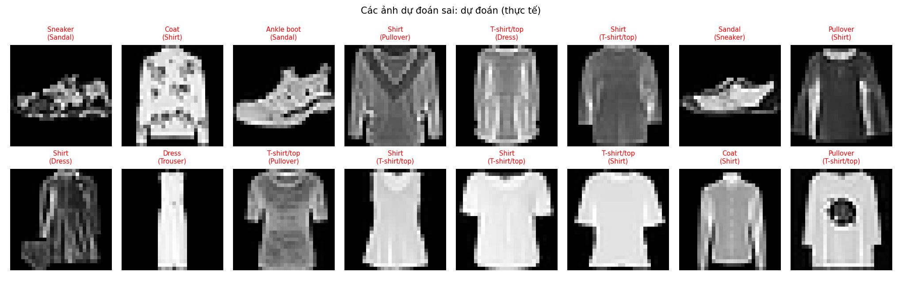
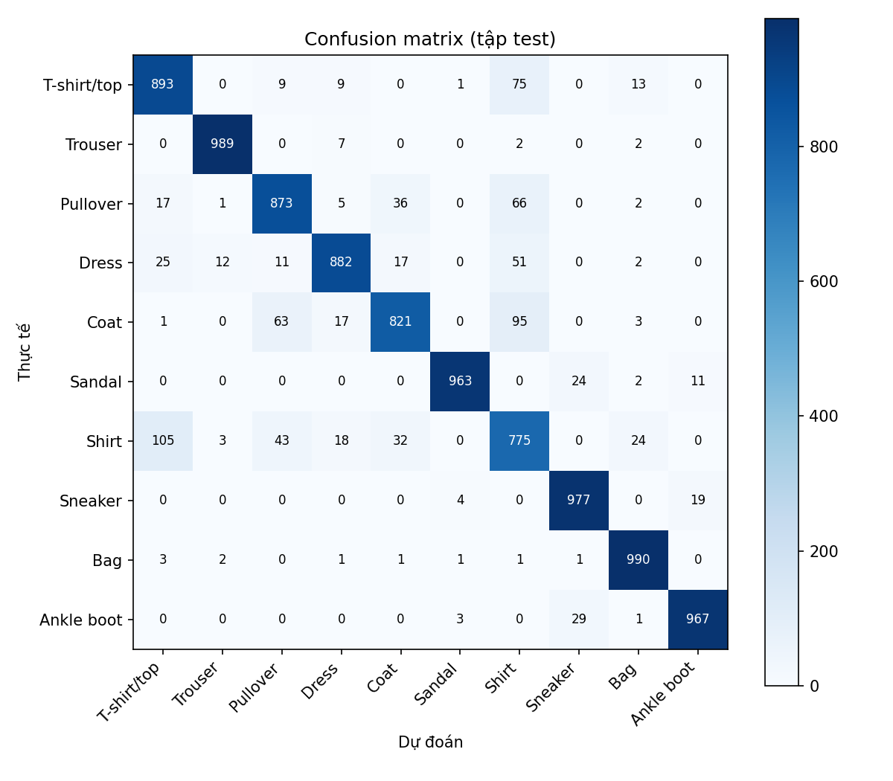

Mục tiêu và checklist bài lab
Đề bài yêu cầu hoàn thành ba nhiệm vụ cụ thể. Vì vậy báo cáo được tổ chức theo ba Task này; phần MLP/CNN chỉ là nội dung hỗ trợ cho thí nghiệm kiến trúc.
| Yêu cầu | Minh chứng trong project |
|---|---|
| Thử nghiệm cấu trúc mạng hoặc hyperparameters | configs/mlp.yaml, configs/cnn.yaml, src/model.py |
| Trực quan hóa loss | history.json, training_curves.png |
| So sánh predicted với actual images | predictions_random.png, predictions_wrong.png |
1. Dữ liệu FashionMNIST
FashionMNIST gồm 70.000 ảnh grayscale 28×28 thuộc 10 lớp. 60.000 ảnh train gốc được chia thành 50.000 train và 10.000 validation; 10.000 ảnh test được giữ riêng.
| Split | Số ảnh | Mục đích |
|---|---|---|
| Train | 50.000 | Cập nhật trọng số |
| Validation | 10.000 | Theo dõi, chọn checkpoint |
| Test | 10.000 | Đánh giá cuối cùng |
Ảnh được chuyển về [0,1] và chuẩn hóa bằng mean 0,2858626, std 0,3529320 tính từ training split. Notebook thực hiện EDA, kiểm tra nhãn, ảnh trống, trùng lặp, phân phối lớp, thống kê pixel và PCA.
2. Task 1 – Thử nghiệm cấu trúc mạng
Đề bài cho phép thử nghiệm cấu trúc mạng hoặc hyperparameters. Project chọn khảo sát hai cấu trúc MLP và CNN. Cùng dataset, seed, split, batch size, optimizer, learning rate và weight decay được sử dụng để việc quan sát tập trung vào khác biệt kiến trúc.
| Thiết lập | MLP | CNN |
|---|---|---|
| Input | Flatten 784 | 1×28×28 |
| Kiến trúc | 784→256→128→10 | Conv 1→32→64→128; pooling; 1152→128→10 |
| Dropout | 0,2 | 0,25 |
| Parameters | 235.146 | 241.994 |
| Optimizer | Adam | Adam |
| Learning rate | 0,001 | 0,001 |
| Batch size | 128 | 128 |
| Epoch tối đa | 15 | 15 |
MLP dùng các lớp fully connected trên vector ảnh đã Flatten. CNN dùng convolution để học đặc trưng cục bộ và bảo toàn cấu trúc không gian. Cấu hình nằm trong configs/mlp.yaml và configs/cnn.yaml.
Kết quả lần chạy local mới nhất được cung cấp
| Chỉ số | MLP | CNN |
|---|---|---|
| Best validation accuracy | 89,15% | 92,25% |
| Test accuracy | 88,34% | 92,20% |
| Macro-F1 | 88,35% | 92,15% |
| Test loss | 0,3276 | 0,2331 |
| Epoch thực chạy | 15 | 15 |
Đồng bộ kết quả: JSON đang lưu trên GitHub cần được cập nhật từ lần chạy local mới nhất trước khi nộp. Hãy chạy train/evaluate và đồng bộ thư mục reports để các bảng, loss curves và ảnh dự đoán cùng một lần chạy.
3. Task 2 – Trực quan hóa độ mất mát (Loss)
Trong mỗi epoch, chương trình ghi lại train loss và validation loss vào history.json. Hàm plot_history() tạo biểu đồ training_curves.png. Quan sát hai đường loss giúp nhận biết mô hình có đang học và có dấu hiệu overfitting hay không.
MLP – Training curves

CNN – Training curves

- Train loss giảm: mô hình đang khớp dần với dữ liệu train.
- Validation loss tăng trong khi train loss giảm kéo dài: có thể xuất hiện overfitting.
- Đọc xu hướng qua nhiều epoch, không kết luận chỉ từ một điểm.
4. Task 3 – Predicted vs Actual Images
Chương trình hiển thị ảnh test cùng hai thông tin: nhãn mô hình dự đoán và nhãn thực tế. Tiêu đề mỗi ảnh có dạng Predicted (Actual). Màu xanh là dự đoán đúng, màu đỏ là dự đoán sai.
Ảnh test ngẫu nhiên

Các ảnh dự đoán sai

Các hình được sinh bởi show_predictions() trong src/utils.py và lưu bởi src/evaluate.py. Ảnh tương ứng của MLP nằm trong reports/mlp/.
5. Quy trình PyTorch được triển khai
- Tensor, Dataset, DataLoader: biểu diễn ảnh/nhãn và nạp theo mini-batch.
- Transforms: chuyển ảnh thành tensor và chuẩn hóa.
- Model building: xây dựng mạng bằng
torch.nn.Module. - Autograd:
loss.backward()tính gradient tự động. - Optimization: Adam cập nhật trọng số qua
optimizer.step(). - Save/load: lưu checkpoint tốt nhất theo validation và nạp lại khi đánh giá.
Training loop: zero_grad → forward → loss → backward → optimizer.step. Test set chỉ được dùng cho đánh giá cuối cùng.
6. Đánh giá bổ sung
Accuracy, Precision, Recall, Macro-F1 và Confusion Matrix được dùng để đánh giá thêm chất lượng phân loại trên 10 lớp. Đây là nội dung hỗ trợ, không thay thế ba nhiệm vụ chính.
| Chỉ số | MLP | CNN |
|---|---|---|
| Test accuracy | 88,34% | 92,20% |
| Macro-F1 | 88,35% | 92,15% |

7. Kết luận theo đúng ba Task
- Task 1 – Thử nghiệm: đã triển khai hai cấu trúc MLP/CNN với cấu hình riêng và điều kiện dữ liệu/huấn luyện cơ bản được giữ thống nhất.
- Task 2 – Visualize Loss: lưu loss theo epoch và trực quan hóa train loss cùng validation loss.
- Task 3 – Predicted vs Actual: tạo ảnh dự đoán ngẫu nhiên và ảnh dự đoán sai, thể hiện rõ nhãn dự đoán và nhãn thực tế.
Vì vậy, trọng tâm bài lab là thực hành xây dựng, huấn luyện, theo dõi loss và kiểm tra dự đoán bằng PyTorch. So sánh MLP/CNN chỉ là một phần của thí nghiệm cấu trúc mạng.